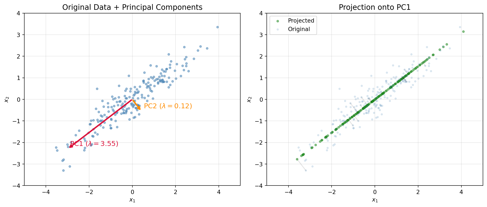

Linear algebra is the language of data. Every dataset is a matrix, every data point is a vector, and every model transformation, rotation, scaling, projection, is a linear map. This chapter develops vectors, vector spaces, subspaces, bases, and inner products from first principles, then connects each concept to concrete machine learning operations.
22.1 Motivation
A supervised learning dataset with \(n\) observations and \(d\) features is a matrix \(\mathbf{X} \in \mathbb{R}^{n \times d}\). Each row \(\mathbf{x}_i \in \mathbb{R}^d\) is a feature vector; each column \(\mathbf{x}^{(j)} \in \mathbb{R}^n\) is a feature across all observations. Principal component analysis finds a low-dimensional subspace that captures the most variance. A neural network layer computes \(\mathbf{h} = \sigma(\mathbf{W}\mathbf{x} + \mathbf{b})\), where \(\mathbf{W}\) is a weight matrix, \(\mathbf{x}\) is an input vector, \(\mathbf{b}\) is a bias vector, and \(\sigma\) is a nonlinearity. None of these operations can be stated, analyzed, or implemented without vectors and the spaces they inhabit.
22.2 Vectors
22.2.1 Definition
A vector\(\mathbf{v} \in \mathbb{R}^d\) is an ordered \(d\)-tuple of real numbers:
Vectors are written as bold lowercase letters (\(\mathbf{v}\), \(\mathbf{w}\), \(\mathbf{x}\)). The entry \(v_i\) is the \(i\)-th component or coordinate. The integer \(d\) is the dimension.
22.2.2 Vector operations
Addition. For \(\mathbf{u}, \mathbf{v} \in \mathbb{R}^d\), addition is component-wise:
Figure 22.1: Vector addition and scalar multiplication in \(\mathbb{R}^2\). Left: the parallelogram law for addition. Right: scaling a vector by \(\alpha = 2\) and \(\alpha = -0.5\).
22.3 Vector Spaces
22.3.1 Axioms
A vector space over \(\mathbb{R}\) is a set \(V\) equipped with two operations, vector addition \(+: V \times V \to V\) and scalar multiplication \(\cdot : \mathbb{R} \times V \to V\), satisfying the following axioms for all \(\mathbf{u}, \mathbf{v}, \mathbf{w} \in V\) and all \(\alpha, \beta \in \mathbb{R}\):
Table 22.1: The eight axioms defining a real vector space.
\(\mathbb{R}^d\) with component-wise addition and scalar multiplication satisfies all eight axioms and is the canonical example. Other examples include the space of polynomials of degree at most \(k\), and the space of \(m \times n\) real matrices.
22.3.2 Why abstract axioms matter for ML
Embeddings map discrete objects (words, users, products) into \(\mathbb{R}^d\). The vector space axioms guarantee that arithmetic on embeddings, averaging word vectors, interpolating between latent codes, produces valid elements of the same space. Without closure under addition and scalar multiplication, operations like \(\text{king} - \text{man} + \text{woman} \approx \text{queen}\) would be ill-defined.
22.4 Subspaces
22.4.1 Definition and subspace test
A subset \(W \subseteq V\) is a subspace of \(V\) if \(W\) is itself a vector space under the same operations. Equivalently, \(W\) is a subspace if and only if:
\(\mathbf{0} \in W\) (the zero vector is in \(W\)).
\(\mathbf{u}, \mathbf{v} \in W \implies \mathbf{u} + \mathbf{v} \in W\) (closure under addition).
\(\alpha \in \mathbb{R},\; \mathbf{v} \in W \implies \alpha \mathbf{v} \in W\) (closure under scalar multiplication).
Conditions 2 and 3 are often combined: \(W\) is a subspace if and only if \(W \neq \emptyset\) and for all \(\mathbf{u}, \mathbf{v} \in W\) and \(\alpha, \beta \in \mathbb{R}\), the linear combination \(\alpha \mathbf{u} + \beta \mathbf{v} \in W\).
Example. The set of all vectors in \(\mathbb{R}^3\) with \(x_3 = 0\) forms a subspace (it is isomorphic to \(\mathbb{R}^2\)). The set of all vectors with \(x_1 = 1\) does not, because it fails to contain \(\mathbf{0}\).
22.4.2 Column space, null space, and row space
For a matrix \(\mathbf{A} \in \mathbb{R}^{m \times n}\):
The column space (range) \(\text{Col}(\mathbf{A}) = \{\mathbf{A}\mathbf{x} : \mathbf{x} \in \mathbb{R}^n\}\) is a subspace of \(\mathbb{R}^m\).
The null space (kernel) \(\text{Null}(\mathbf{A}) = \{\mathbf{x} \in \mathbb{R}^n : \mathbf{A}\mathbf{x} = \mathbf{0}\}\) is a subspace of \(\mathbb{R}^n\).
The row space\(\text{Row}(\mathbf{A}) = \text{Col}(\mathbf{A}^\top)\) is a subspace of \(\mathbb{R}^n\).
These four fundamental subspaces (column space, null space, row space, left null space) are central to understanding linear systems and appear repeatedly in least-squares regression, PCA, and dimensionality reduction [TODO: CITE].
22.5 Linear Combinations, Span, and Independence
22.5.1 Linear combinations
A linear combination of vectors \(\mathbf{v}_1, \dots, \mathbf{v}_k \in V\) is any vector of the form
The span is always a subspace of \(V\). Geometrically, the span of one nonzero vector is a line through the origin; the span of two non-collinear vectors is a plane through the origin.
22.5.3 Linear independence
Vectors \(\mathbf{v}_1, \dots, \mathbf{v}_k\) are linearly independent if the only solution to
is \(\alpha_1 = \alpha_2 = \cdots = \alpha_k = 0\). Otherwise, the vectors are linearly dependent: at least one vector can be written as a linear combination of the others.
Why it matters. Linearly dependent features in a design matrix \(\mathbf{X}\) cause \(\mathbf{X}^\top \mathbf{X}\) to be singular, making ordinary least squares unsolvable without regularization. Detecting and removing linear dependencies (multicollinearity) is a standard preprocessing step in regression.
The scalars \(c_1, \dots, c_d\) are the coordinates (or components) of \(\mathbf{v}\) with respect to \(\mathcal{B}\).
22.6.2 Standard basis
The standard basis of \(\mathbb{R}^d\) is \(\{\mathbf{e}_1, \mathbf{e}_2, \dots, \mathbf{e}_d\}\), where \(\mathbf{e}_i\) has a 1 in position \(i\) and 0 elsewhere. Any vector \(\mathbf{v} = (v_1, \dots, v_d)^\top\) is the linear combination \(\mathbf{v} = \sum_{i=1}^d v_i \mathbf{e}_i\), so the components of \(\mathbf{v}\) in the standard basis are simply its entries.
22.6.3 Dimension
Theorem 22.1 (Dimension theorem) All bases of a finite-dimensional vector space \(V\) have the same number of elements. This common cardinality is the dimension\(\dim(V)\).
For \(\mathbb{R}^d\), the dimension is \(d\). For the column space of a matrix \(\mathbf{A}\), the dimension is the rank of \(\mathbf{A}\):
Rank, nullity theorem. For \(\mathbf{A} \in \mathbb{R}^{m \times n}\):
\[
\text{rank}(\mathbf{A}) + \dim(\text{Null}(\mathbf{A})) = n
\tag{22.9}\]
This identity connects the number of “useful” directions a matrix maps to (rank) with the number of directions it collapses to zero (nullity).
22.6.4 Change of basis
If \(\mathcal{B} = \{\mathbf{b}_1, \dots, \mathbf{b}_d\}\) and \(\mathcal{B}' = \{\mathbf{b}'_1, \dots, \mathbf{b}'_d\}\) are two bases for \(V\), there exists an invertible change-of-basis matrix\(\mathbf{P}\) such that coordinates transform as
where \([\mathbf{v}]_{\mathcal{B}}\) denotes the coordinate vector of \(\mathbf{v}\) relative to \(\mathcal{B}\). PCA amounts to a change of basis from the standard basis to the eigenvector basis of the covariance matrix, choosing only the top \(k\) eigenvectors to reduce dimension.
import numpy as npdef check_linear_independence(vectors: list[np.ndarray]) ->tuple[bool, int]:"""Check whether a list of vectors is linearly independent. Parameters ---------- vectors : list[np.ndarray] List of 1-D numpy arrays, all of the same length. Returns ------- tuple[bool, int] (is_independent, rank) where is_independent is True if the vectors form a linearly independent set, and rank is the dimension of their span. """ matrix = np.column_stack(vectors) rank = np.linalg.matrix_rank(matrix)return rank ==len(vectors), rank# Example: three vectors in R^3v1 = np.array([1.0, 0.0, 0.0])v2 = np.array([0.0, 1.0, 0.0])v3 = np.array([1.0, 1.0, 0.0]) # v3 = v1 + v2 -> dependentindependent, rank = check_linear_independence([v1, v2, v3])print(f"Independent: {independent}, Rank: {rank}")# v3 lies in span(v1, v2), so rank = 2 < 3independent, rank = check_linear_independence([v1, v2])print(f"Independent: {independent}, Rank: {rank}")
The dot product is the most common inner product and appears in almost every ML algorithm: it computes similarity in embedding spaces, attention scores in transformers, and the output of a linear neuron.
22.7.2 General inner products
Definition 22.1 (Inner product) An inner product on a real vector space \(V\) is a function \(\langle \cdot, \cdot \rangle : V \times V \to \mathbb{R}\) satisfying, for all \(\mathbf{u}, \mathbf{v}, \mathbf{w} \in V\) and \(\alpha \in \mathbb{R}\):
Linearity in the first argument: \(\langle \alpha \mathbf{u} + \mathbf{v}, \mathbf{w} \rangle = \alpha \langle \mathbf{u}, \mathbf{w} \rangle + \langle \mathbf{v}, \mathbf{w} \rangle\).
Positive definiteness: \(\langle \mathbf{v}, \mathbf{v} \rangle \geq 0\), with equality if and only if \(\mathbf{v} = \mathbf{0}\).
A vector space equipped with an inner product is called an inner product space. The Euclidean dot product is one choice; the weighted inner product \(\langle \mathbf{u}, \mathbf{v} \rangle_{\mathbf{M}} = \mathbf{u}^\top \mathbf{M} \mathbf{v}\) for a positive definite matrix \(\mathbf{M}\) is another (used in Mahalanobis distance).
22.7.3 Norms
A norm measures the “size” of a vector. An inner product induces a norm via
Dividing by 4 and taking square roots yields the result. Equality holds when the minimum of the quadratic is zero, i.e., \(\mathbf{u} = t^* \mathbf{v}\) for the minimizing \(t^*\). \(\blacksquare\)
ML consequence. Cosine similarity \(\cos \theta = \frac{\mathbf{u}^\top \mathbf{v}}{\|\mathbf{u}\| \|\mathbf{v}\|}\) is well-defined and bounded in \([-1, 1]\) precisely because of Cauchy, Schwarz.
22.8 Orthogonality
22.8.1 Orthogonal vectors
Two vectors \(\mathbf{u}, \mathbf{v}\) are orthogonal if \(\langle \mathbf{u}, \mathbf{v} \rangle = 0\), written \(\mathbf{u} \perp \mathbf{v}\).
A set of nonzero vectors \(\{\mathbf{v}_1, \dots, \mathbf{v}_k\}\) is orthogonal if \(\langle \mathbf{v}_i, \mathbf{v}_j \rangle = 0\) for all \(i \neq j\), and orthonormal if additionally \(\|\mathbf{v}_i\| = 1\) for all \(i\).
Key property. Every orthogonal set of nonzero vectors is linearly independent. Orthonormal bases are computationally convenient because coordinate extraction reduces to inner products: if \(\{\mathbf{q}_1, \dots, \mathbf{q}_d\}\) is orthonormal, then
The residual \(\mathbf{v} - \text{proj}_W(\mathbf{v})\) is orthogonal to every vector in \(W\). This is the geometric foundation of least-squares regression: the fitted values \(\hat{\mathbf{y}} = \mathbf{X}(\mathbf{X}^\top \mathbf{X})^{-1}\mathbf{X}^\top \mathbf{y}\) are the projection of \(\mathbf{y}\) onto the column space of \(\mathbf{X}\), and the residuals are orthogonal to every column of \(\mathbf{X}\).
Figure 22.3: Orthogonal projection of \(\mathbf{v}\) onto \(\text{span}(\mathbf{u})\). The residual (dashed red) is perpendicular to \(\mathbf{u}\).
22.8.3 Gram, Schmidt process
Given linearly independent vectors \(\{\mathbf{v}_1, \dots, \mathbf{v}_k\}\), the Gram, Schmidt process produces an orthonormal set \(\{\mathbf{q}_1, \dots, \mathbf{q}_k\}\) spanning the same subspace:
A function \(T: V \to W\) between vector spaces is a linear map (linear transformation) if for all \(\mathbf{u}, \mathbf{v} \in V\) and \(\alpha \in \mathbb{R}\):
Every linear map \(T: \mathbb{R}^n \to \mathbb{R}^m\) can be represented by a matrix \(\mathbf{A} \in \mathbb{R}^{m \times n}\) such that \(T(\mathbf{x}) = \mathbf{A}\mathbf{x}\). This correspondence is one-to-one: the matrix is the linear map (once bases are fixed).
22.9.2 Geometric interpretation
Common linear maps in \(\mathbb{R}^2\) and their matrices:
Table 22.3: Geometric linear transformations and their matrix representations.
Figure 22.4: Effect of four linear transformations on the unit square. Each panel shows the original square (blue dashed) and the transformed shape (orange filled).
22.10 Application: PCA as a Change of Basis
Principal Component Analysis (PCA) illustrates nearly every concept in this chapter. Given a centered data matrix \(\mathbf{X} \in \mathbb{R}^{n \times d}\) (rows are observations, each feature has mean zero), PCA finds the orthonormal basis that maximizes variance along each successive axis.
Find the eigendecomposition \(\mathbf{C} = \mathbf{Q}\boldsymbol{\Lambda}\mathbf{Q}^\top\), where \(\mathbf{Q}\) is orthogonal and \(\boldsymbol{\Lambda} = \text{diag}(\lambda_1, \dots, \lambda_d)\) with \(\lambda_1 \geq \cdots \geq \lambda_d \geq 0\).
The columns of \(\mathbf{Q}\) are the principal components, an orthonormal basis for \(\mathbb{R}^d\) ordered by variance explained.
Project onto the top \(k\) components: \(\mathbf{Z} = \mathbf{X}\mathbf{Q}_k \in \mathbb{R}^{n \times k}\), where \(\mathbf{Q}_k\) contains the first \(k\) columns of \(\mathbf{Q}\).
This is a change of basis (Equation 22.10) from the standard basis to the eigenvector basis, followed by truncation to a \(k\)-dimensional subspace.
import numpy as npimport matplotlib.pyplot as pltnp.random.seed(42)# Generate correlated 2-D datan =200mean = np.array([0.0, 0.0])cov = np.array([[2.5, 1.8], [1.8, 1.5]])X = np.random.multivariate_normal(mean, cov, size=n)# CenterX_centered = X - X.mean(axis=0)# Covariance and eigen-decompositionC = (X_centered.T @ X_centered) / (n -1)eigenvalues, eigenvectors = np.linalg.eigh(C)# Sort descendingidx = np.argsort(eigenvalues)[::-1]eigenvalues = eigenvalues[idx]eigenvectors = eigenvectors[:, idx]# Project onto first PCZ1 = X_centered @ eigenvectors[:, 0:1] # (n, 1)X_proj = Z1 @ eigenvectors[:, 0:1].T # back to 2-D for plottingfig, axes = plt.subplots(1, 2, figsize=(12, 5))# Left: original data + PC directionsax = axes[0]ax.scatter(X_centered[:, 0], X_centered[:, 1], s=12, alpha=0.5, color="steelblue")origin = np.array([0, 0])for i, (ev, color) inenumerate(zip(eigenvalues, ["crimson", "darkorange"])): direction = eigenvectors[:, i] * np.sqrt(ev) *2 ax.annotate("", xy=direction, xytext=origin, arrowprops=dict(arrowstyle="->", color=color, lw=2.5)) ax.text(direction[0] +0.1, direction[1] +0.15,f"PC{i+1} ($\\lambda={ev:.2f}$)", fontsize=12, color=color)ax.set_xlim(-5, 5)ax.set_ylim(-4, 4)ax.set_aspect("equal")ax.grid(True, alpha=0.3)ax.set_title("Original Data + Principal Components", fontsize=13)ax.set_xlabel(r"$x_1$")ax.set_ylabel(r"$x_2$")# Right: projected dataax = axes[1]ax.scatter(X_proj[:, 0], X_proj[:, 1], s=12, alpha=0.5, color="forestgreen", label="Projected")ax.scatter(X_centered[:, 0], X_centered[:, 1], s=8, alpha=0.15, color="steelblue", label="Original")# Lines from original to projectedfor i inrange(0, n, 10): ax.plot([X_centered[i, 0], X_proj[i, 0]], [X_centered[i, 1], X_proj[i, 1]], "k-", alpha=0.1)ax.set_xlim(-5, 5)ax.set_ylim(-4, 4)ax.set_aspect("equal")ax.grid(True, alpha=0.3)ax.set_title("Projection onto PC1", fontsize=13)ax.set_xlabel(r"$x_1$")ax.set_ylabel(r"$x_2$")ax.legend(fontsize=10)plt.tight_layout()plt.show()# Variance explainedtotal_var = eigenvalues.sum()for i, ev inenumerate(eigenvalues):print(f"PC{i+1}: eigenvalue = {ev:.4f}, variance explained = {ev/total_var:.1%}")

Figure 22.5: PCA on synthetic 2-D data. Left: original data with principal component directions (eigenvectors scaled by eigenvalues). Right: data projected onto the first principal component.
Vectors: each data point \(\mathbf{x}_i \in \mathbb{R}^d\) is a vector.
Subspace: the top-\(k\) PC subspace is a \(k\)-dimensional subspace of \(\mathbb{R}^d\).
Basis: the eigenvectors form an orthonormal basis.
Orthogonality: principal components are mutually orthogonal.
Projection: dimensionality reduction is orthogonal projection onto the PC subspace.
Change of basis: the projected coordinates \(\mathbf{Z}\) are coordinates in the eigenvector basis.
Norms: the reconstruction error \(\|\mathbf{X} - \mathbf{Z}\mathbf{Q}_k^\top\|_F^2\) is minimized by PCA.
22.11 Exercises
22.11.1 Derivation
Prove that the span of any set of vectors is a subspace. Let \(S = \{\mathbf{v}_1, \dots, \mathbf{v}_k\} \subseteq V\). Show that \(\text{span}(S)\) contains \(\mathbf{0}\) and is closed under addition and scalar multiplication.
Prove the Cauchy, Schwarz inequality using the Gram matrix. For vectors \(\mathbf{u}, \mathbf{v}\), the Gram matrix is \(\mathbf{G} = \begin{pmatrix} \langle \mathbf{u}, \mathbf{u}\rangle & \langle \mathbf{u}, \mathbf{v}\rangle \\ \langle \mathbf{v}, \mathbf{u}\rangle & \langle \mathbf{v}, \mathbf{v}\rangle \end{pmatrix}\). Show that \(\det(\mathbf{G}) \geq 0\) and derive the inequality from this fact.
Derive the rank, nullity theorem for a matrix \(\mathbf{A} \in \mathbb{R}^{m \times n}\) by considering the row echelon form and counting pivot versus free variables.
22.11.2 Coding
Implement PCA from scratch (no sklearn). Write a function pca(X: np.ndarray, k: int) -> tuple[np.ndarray, np.ndarray, np.ndarray] that returns (Z, eigenvectors, eigenvalues) where Z is the \(n \times k\) projected data. Validate against sklearn.decomposition.PCA on a synthetic dataset.
Visualize the unit ball in \(\mathbb{R}^2\) under the \(\ell_1\), \(\ell_2\), and \(\ell_\infty\) norms. Plot the set \(\{\mathbf{v} \in \mathbb{R}^2 : \|\mathbf{v}\|_p \leq 1\}\) for \(p \in \{1, 2, \infty\}\) on a single figure and annotate each shape (diamond, circle, square).
Gram, Schmidt stability. Generate \(k = 50\) random vectors in \(\mathbb{R}^{100}\) and run both the classical Gram, Schmidt (as implemented above) and numpy.linalg.qr. Compare orthogonality of the outputs by computing \(\|\mathbf{Q}^\top \mathbf{Q} - \mathbf{I}\|_F\) for each method. Explain why the results differ.
22.11.3 Conceptual
Explain why the null space of a feature matrix matters for regularization. If \(\mathbf{X} \in \mathbb{R}^{n \times d}\) has a nontrivial null space (i.e., \(d > \text{rank}(\mathbf{X})\)), what happens to the OLS solution \(\hat{\boldsymbol{\beta}} = (\mathbf{X}^\top \mathbf{X})^{-1}\mathbf{X}^\top \mathbf{y}\)? How does adding an \(\ell_2\) penalty (\(\lambda \|\boldsymbol{\beta}\|_2^2\)) resolve this?
Relate cosine similarity to Euclidean distance for normalized vectors. Show that if \(\|\mathbf{u}\|_2 = \|\mathbf{v}\|_2 = 1\), then \(\|\mathbf{u} - \mathbf{v}\|_2^2 = 2(1 - \cos\theta)\), where \(\theta\) is the angle between \(\mathbf{u}\) and \(\mathbf{v}\). What does this imply about choosing between cosine similarity and Euclidean distance for normalized embeddings?
22.11.4 Applied
Market segmentation via PCA. Load (or simulate) a customer dataset with 10 features (spending in different categories). Apply PCA to reduce to 2 dimensions. Plot the projected data colored by a known segment label. Report the cumulative variance explained by the first two components and interpret the loadings of PC1 and PC2 in business terms.
Orthogonal projections in portfolio theory. In a simplified Markowitz model, each asset’s return is a vector \(\mathbf{r}_i \in \mathbb{R}^T\) (returns over \(T\) periods). The market portfolio direction is \(\mathbf{r}_m\). Compute the projection of each asset onto \(\mathbf{r}_m\) (systematic risk) and the residual (idiosyncratic risk). Verify that the residuals are orthogonal to \(\mathbf{r}_m\) and interpret this decomposition.
Source Code
# Linear Algebra: Vectors and Spaces {#sec-018-linear-algebra-vectors-spaces}Linear algebra is the language of data. Every dataset is a matrix, every data point is a vector, and every model transformation, rotation, scaling, projection, is a linear map. This chapter develops vectors, vector spaces, subspaces, bases, and inner products from first principles, then connects each concept to concrete machine learning operations.## Motivation {#sec-018-motivation}A supervised learning dataset with $n$ observations and $d$ features is a matrix $\mathbf{X} \in \mathbb{R}^{n \times d}$. Each row $\mathbf{x}_i \in \mathbb{R}^d$ is a feature vector; each column $\mathbf{x}^{(j)} \in \mathbb{R}^n$ is a feature across all observations. Principal component analysis finds a low-dimensional subspace that captures the most variance. A neural network layer computes $\mathbf{h} = \sigma(\mathbf{W}\mathbf{x} + \mathbf{b})$, where $\mathbf{W}$ is a weight matrix, $\mathbf{x}$ is an input vector, $\mathbf{b}$ is a bias vector, and $\sigma$ is a nonlinearity. None of these operations can be stated, analyzed, or implemented without vectors and the spaces they inhabit.------------------------------------------------------------------------## Vectors {#sec-018-vectors}### DefinitionA **vector** $\mathbf{v} \in \mathbb{R}^d$ is an ordered $d$-tuple of real numbers:$$\mathbf{v} = \begin{pmatrix} v_1 \\ v_2 \\ \vdots \\ v_d \end{pmatrix}$$ {#eq-018-vector}Vectors are written as bold lowercase letters ($\mathbf{v}$, $\mathbf{w}$, $\mathbf{x}$). The entry $v_i$ is the $i$-th **component** or **coordinate**. The integer $d$ is the **dimension**.### Vector operations**Addition.** For $\mathbf{u}, \mathbf{v} \in \mathbb{R}^d$, addition is component-wise:$$\mathbf{u} + \mathbf{v} = \begin{pmatrix} u_1 + v_1 \\ u_2 + v_2 \\ \vdots \\ u_d + v_d \end{pmatrix}$$ {#eq-018-vector-addition}**Scalar multiplication.** For $\alpha \in \mathbb{R}$ and $\mathbf{v} \in \mathbb{R}^d$:$$\alpha \mathbf{v} = \begin{pmatrix} \alpha v_1 \\ \alpha v_2 \\ \vdots \\ \alpha v_d \end{pmatrix}$$ {#eq-018-scalar-multiplication}These two operations are the only ingredients needed to define a vector space.```{python}#| code-fold: true#| label: fig-018-vector-operations#| fig-cap: "Vector addition and scalar multiplication in $\\mathbb{R}^2$. Left: the parallelogram law for addition. Right: scaling a vector by $\\alpha = 2$ and $\\alpha = -0.5$."import numpy as npimport matplotlib.pyplot as pltimport matplotlib.patches as mpatchesnp.random.seed(42)fig, axes = plt.subplots(1, 2, figsize=(11, 5))# --- Left panel: vector addition ---ax = axes[0]u = np.array([2, 1])v = np.array([1, 2.5])s = u + vax.annotate("", xy=u, xytext=(0, 0), arrowprops=dict(arrowstyle="->", color="steelblue", lw=2))ax.annotate("", xy=v, xytext=(0, 0), arrowprops=dict(arrowstyle="->", color="darkorange", lw=2))ax.annotate("", xy=s, xytext=(0, 0), arrowprops=dict(arrowstyle="->", color="forestgreen", lw=2.5))# Parallelogram dashesax.plot([u[0], s[0]], [u[1], s[1]], "k--", alpha=0.3)ax.plot([v[0], s[0]], [v[1], s[1]], "k--", alpha=0.3)ax.text(u[0] +0.1, u[1] -0.3, r"$\mathbf{u}$", fontsize=14, color="steelblue")ax.text(v[0] -0.5, v[1] +0.1, r"$\mathbf{v}$", fontsize=14, color="darkorange")ax.text(s[0] +0.1, s[1] +0.1, r"$\mathbf{u}+\mathbf{v}$", fontsize=14, color="forestgreen")ax.set_xlim(-0.5, 4.5)ax.set_ylim(-0.5, 4.5)ax.set_aspect("equal")ax.grid(True, alpha=0.3)ax.set_title("Vector Addition", fontsize=13)ax.set_xlabel(r"$x_1$")ax.set_ylabel(r"$x_2$")# --- Right panel: scalar multiplication ---ax = axes[1]w = np.array([1.5, 1.0])for alpha, color, label in [(1, "steelblue", r"$\mathbf{w}$"), (2, "forestgreen", r"$2\mathbf{w}$"), (-0.5, "crimson", r"$-0.5\mathbf{w}$")]: tip = alpha * w ax.annotate("", xy=tip, xytext=(0, 0), arrowprops=dict(arrowstyle="->", color=color, lw=2)) offset =0.15if alpha >0else-0.3 ax.text(tip[0] +0.1, tip[1] + offset, label, fontsize=14, color=color)ax.set_xlim(-1.5, 4)ax.set_ylim(-1, 3)ax.set_aspect("equal")ax.grid(True, alpha=0.3)ax.set_title("Scalar Multiplication", fontsize=13)ax.set_xlabel(r"$x_1$")ax.set_ylabel(r"$x_2$")plt.tight_layout()plt.show()```------------------------------------------------------------------------## Vector Spaces {#sec-018-vector-spaces}### AxiomsA **vector space** over $\mathbb{R}$ is a set $V$ equipped with two operations, vector addition $+: V \times V \to V$ and scalar multiplication $\cdot : \mathbb{R} \times V \to V$, satisfying the following axioms for all $\mathbf{u}, \mathbf{v}, \mathbf{w} \in V$ and all $\alpha, \beta \in \mathbb{R}$:|\#| Axiom | Statement ||----------------|----------------------|-----------------------------------|| 1 | Commutativity of addition | $\mathbf{u} + \mathbf{v} = \mathbf{v} + \mathbf{u}$ || 2 | Associativity of addition | $(\mathbf{u} + \mathbf{v}) + \mathbf{w} = \mathbf{u} + (\mathbf{v} + \mathbf{w})$ || 3 | Additive identity | $\exists\, \mathbf{0} \in V : \mathbf{v} + \mathbf{0} = \mathbf{v}$ || 4 | Additive inverse | $\forall\, \mathbf{v} \in V,\; \exists\, (-\mathbf{v}) : \mathbf{v} + (-\mathbf{v}) = \mathbf{0}$ || 5 | Compatibility of scalar multiplication | $\alpha(\beta \mathbf{v}) = (\alpha \beta)\mathbf{v}$ || 6 | Multiplicative identity | $1 \cdot \mathbf{v} = \mathbf{v}$ || 7 | Distributivity over vector addition | $\alpha(\mathbf{u} + \mathbf{v}) = \alpha \mathbf{u} + \alpha \mathbf{v}$ || 8 | Distributivity over scalar addition | $(\alpha + \beta)\mathbf{v} = \alpha \mathbf{v} + \beta \mathbf{v}$ |: The eight axioms defining a real vector space. {#tbl-018-vector-space-axioms}$\mathbb{R}^d$ with component-wise addition and scalar multiplication satisfies all eight axioms and is the canonical example. Other examples include the space of polynomials of degree at most $k$, and the space of $m \times n$ real matrices.### Why abstract axioms matter for MLEmbeddings map discrete objects (words, users, products) into $\mathbb{R}^d$. The vector space axioms guarantee that arithmetic on embeddings, averaging word vectors, interpolating between latent codes, produces valid elements of the same space. Without closure under addition and scalar multiplication, operations like $\text{king} - \text{man} + \text{woman} \approx \text{queen}$ would be ill-defined.------------------------------------------------------------------------## Subspaces {#sec-018-subspaces}### Definition and subspace testA subset $W \subseteq V$ is a **subspace** of $V$ if $W$ is itself a vector space under the same operations. Equivalently, $W$ is a subspace if and only if:1. $\mathbf{0} \in W$ (the zero vector is in $W$).2. $\mathbf{u}, \mathbf{v} \in W \implies \mathbf{u} + \mathbf{v} \in W$ (closure under addition).3. $\alpha \in \mathbb{R},\; \mathbf{v} \in W \implies \alpha \mathbf{v} \in W$ (closure under scalar multiplication).Conditions 2 and 3 are often combined: $W$ is a subspace if and only if $W \neq \emptyset$ and for all $\mathbf{u}, \mathbf{v} \in W$ and $\alpha, \beta \in \mathbb{R}$, the linear combination $\alpha \mathbf{u} + \beta \mathbf{v} \in W$.**Example.** The set of all vectors in $\mathbb{R}^3$ with $x_3 = 0$ forms a subspace (it is isomorphic to $\mathbb{R}^2$). The set of all vectors with $x_1 = 1$ does not, because it fails to contain $\mathbf{0}$.### Column space, null space, and row spaceFor a matrix $\mathbf{A} \in \mathbb{R}^{m \times n}$:- The **column space** (range) $\text{Col}(\mathbf{A}) = \{\mathbf{A}\mathbf{x} : \mathbf{x} \in \mathbb{R}^n\}$ is a subspace of $\mathbb{R}^m$.- The **null space** (kernel) $\text{Null}(\mathbf{A}) = \{\mathbf{x} \in \mathbb{R}^n : \mathbf{A}\mathbf{x} = \mathbf{0}\}$ is a subspace of $\mathbb{R}^n$.- The **row space** $\text{Row}(\mathbf{A}) = \text{Col}(\mathbf{A}^\top)$ is a subspace of $\mathbb{R}^n$.These four fundamental subspaces (column space, null space, row space, left null space) are central to understanding linear systems and appear repeatedly in least-squares regression, PCA, and dimensionality reduction \[TODO: CITE\].------------------------------------------------------------------------## Linear Combinations, Span, and Independence {#sec-018-span-independence}### Linear combinationsA **linear combination** of vectors $\mathbf{v}_1, \dots, \mathbf{v}_k \in V$ is any vector of the form$$\mathbf{w} = \sum_{i=1}^{k} \alpha_i \mathbf{v}_i = \alpha_1 \mathbf{v}_1 + \alpha_2 \mathbf{v}_2 + \cdots + \alpha_k \mathbf{v}_k$$ {#eq-018-linear-combination}where $\alpha_1, \dots, \alpha_k \in \mathbb{R}$ are scalars (called **coefficients** or **weights**).### SpanThe **span** of $\{\mathbf{v}_1, \dots, \mathbf{v}_k\}$ is the set of all linear combinations:$$\text{span}(\mathbf{v}_1, \dots, \mathbf{v}_k) = \left\{ \sum_{i=1}^{k} \alpha_i \mathbf{v}_i : \alpha_i \in \mathbb{R} \right\}$$ {#eq-018-span}The span is always a subspace of $V$. Geometrically, the span of one nonzero vector is a line through the origin; the span of two non-collinear vectors is a plane through the origin.### Linear independenceVectors $\mathbf{v}_1, \dots, \mathbf{v}_k$ are **linearly independent** if the only solution to$$\sum_{i=1}^{k} \alpha_i \mathbf{v}_i = \mathbf{0}$$ {#eq-018-linear-independence}is $\alpha_1 = \alpha_2 = \cdots = \alpha_k = 0$. Otherwise, the vectors are **linearly dependent**: at least one vector can be written as a linear combination of the others.**Why it matters.** Linearly dependent features in a design matrix $\mathbf{X}$ cause $\mathbf{X}^\top \mathbf{X}$ to be singular, making ordinary least squares unsolvable without regularization. Detecting and removing linear dependencies (multicollinearity) is a standard preprocessing step in regression.```{python}#| code-fold: false#| label: fig-018-span-independence#| fig-cap: "Left: two linearly independent vectors span $\\mathbb{R}^2$ (the full plane). Right: two linearly dependent vectors span only a line."import numpy as npimport matplotlib.pyplot as pltnp.random.seed(42)fig, axes = plt.subplots(1, 2, figsize=(11, 5))# --- Left panel: linearly independent ---ax = axes[0]v1 = np.array([2, 0.5])v2 = np.array([0.5, 2])# Plot span as shaded region (grid of linear combinations)alphas = np.linspace(-1.5, 1.5, 30)pts = np.array([a1 * v1 + a2 * v2 for a1 in alphas for a2 in alphas])ax.scatter(pts[:, 0], pts[:, 1], s=1, alpha=0.15, color="mediumpurple")ax.annotate("", xy=v1, xytext=(0, 0), arrowprops=dict(arrowstyle="->", color="steelblue", lw=2.5))ax.annotate("", xy=v2, xytext=(0, 0), arrowprops=dict(arrowstyle="->", color="darkorange", lw=2.5))ax.text(v1[0] +0.1, v1[1] -0.25, r"$\mathbf{v}_1$", fontsize=14, color="steelblue")ax.text(v2[0] -0.45, v2[1] +0.1, r"$\mathbf{v}_2$", fontsize=14, color="darkorange")ax.set_xlim(-3.5, 3.5)ax.set_ylim(-3.5, 3.5)ax.set_aspect("equal")ax.grid(True, alpha=0.3)ax.set_title("Independent: span is $\\mathbb{R}^2$", fontsize=13)ax.set_xlabel(r"$x_1$")ax.set_ylabel(r"$x_2$")# --- Right panel: linearly dependent ---ax = axes[1]v1 = np.array([1, 2])v2 = np.array([2, 4]) # v2 = 2 * v1t = np.linspace(-2, 2, 100)line_pts = np.outer(t, v1)ax.plot(line_pts[:, 0], line_pts[:, 1], color="mediumpurple", lw=4, alpha=0.3)ax.annotate("", xy=v1, xytext=(0, 0), arrowprops=dict(arrowstyle="->", color="steelblue", lw=2.5))ax.annotate("", xy=v2, xytext=(0, 0), arrowprops=dict(arrowstyle="->", color="darkorange", lw=2.5))ax.text(v1[0] +0.15, v1[1] -0.35, r"$\mathbf{v}_1$", fontsize=14, color="steelblue")ax.text(v2[0] +0.15, v2[1] +0.1, r"$\mathbf{v}_2 = 2\mathbf{v}_1$", fontsize=14, color="darkorange")ax.set_xlim(-3.5, 3.5)ax.set_ylim(-3.5, 5)ax.set_aspect("equal")ax.grid(True, alpha=0.3)ax.set_title("Dependent: span is a line", fontsize=13)ax.set_xlabel(r"$x_1$")ax.set_ylabel(r"$x_2$")plt.tight_layout()plt.show()```------------------------------------------------------------------------## Basis and Dimension {#sec-018-basis-dimension}### BasisA **basis** of a vector space $V$ is a set of vectors $\mathcal{B} = \{\mathbf{b}_1, \dots, \mathbf{b}_d\}$ that is:1. **Linearly independent**, and2. **Spanning**: $\text{span}(\mathcal{B}) = V$.Every vector $\mathbf{v} \in V$ can be written **uniquely** as a linear combination of the basis vectors:$$\mathbf{v} = \sum_{i=1}^{d} c_i \mathbf{b}_i$$ {#eq-018-basis-expansion}The scalars $c_1, \dots, c_d$ are the **coordinates** (or **components**) of $\mathbf{v}$ with respect to $\mathcal{B}$.### Standard basisThe **standard basis** of $\mathbb{R}^d$ is $\{\mathbf{e}_1, \mathbf{e}_2, \dots, \mathbf{e}_d\}$, where $\mathbf{e}_i$ has a 1 in position $i$ and 0 elsewhere. Any vector $\mathbf{v} = (v_1, \dots, v_d)^\top$ is the linear combination $\mathbf{v} = \sum_{i=1}^d v_i \mathbf{e}_i$, so the components of $\mathbf{v}$ in the standard basis are simply its entries.### Dimension::: {#thm-018-dimension}## Dimension theoremAll bases of a finite-dimensional vector space $V$ have the same number of elements. This common cardinality is the **dimension** $\dim(V)$.:::For $\mathbb{R}^d$, the dimension is $d$. For the column space of a matrix $\mathbf{A}$, the dimension is the **rank** of $\mathbf{A}$:$$\text{rank}(\mathbf{A}) = \dim(\text{Col}(\mathbf{A}))$$ {#eq-018-rank}**Rank, nullity theorem.** For $\mathbf{A} \in \mathbb{R}^{m \times n}$:$$\text{rank}(\mathbf{A}) + \dim(\text{Null}(\mathbf{A})) = n$$ {#eq-018-rank-nullity}This identity connects the number of "useful" directions a matrix maps to (rank) with the number of directions it collapses to zero (nullity).### Change of basisIf $\mathcal{B} = \{\mathbf{b}_1, \dots, \mathbf{b}_d\}$ and $\mathcal{B}' = \{\mathbf{b}'_1, \dots, \mathbf{b}'_d\}$ are two bases for $V$, there exists an invertible **change-of-basis matrix** $\mathbf{P}$ such that coordinates transform as$$[\mathbf{v}]_{\mathcal{B}'} = \mathbf{P}^{-1} [\mathbf{v}]_{\mathcal{B}}$$ {#eq-018-change-of-basis}where $[\mathbf{v}]_{\mathcal{B}}$ denotes the coordinate vector of $\mathbf{v}$ relative to $\mathcal{B}$. PCA amounts to a change of basis from the standard basis to the eigenvector basis of the covariance matrix, choosing only the top $k$ eigenvectors to reduce dimension.```{python}#| code-fold: falseimport numpy as npdef check_linear_independence(vectors: list[np.ndarray]) ->tuple[bool, int]:"""Check whether a list of vectors is linearly independent. Parameters ---------- vectors : list[np.ndarray] List of 1-D numpy arrays, all of the same length. Returns ------- tuple[bool, int] (is_independent, rank) where is_independent is True if the vectors form a linearly independent set, and rank is the dimension of their span. """ matrix = np.column_stack(vectors) rank = np.linalg.matrix_rank(matrix)return rank ==len(vectors), rank# Example: three vectors in R^3v1 = np.array([1.0, 0.0, 0.0])v2 = np.array([0.0, 1.0, 0.0])v3 = np.array([1.0, 1.0, 0.0]) # v3 = v1 + v2 -> dependentindependent, rank = check_linear_independence([v1, v2, v3])print(f"Independent: {independent}, Rank: {rank}")# v3 lies in span(v1, v2), so rank = 2 < 3independent, rank = check_linear_independence([v1, v2])print(f"Independent: {independent}, Rank: {rank}")```------------------------------------------------------------------------## Inner Products and Norms {#sec-018-inner-products}### Dot productThe **dot product** (Euclidean inner product) of $\mathbf{u}, \mathbf{v} \in \mathbb{R}^d$ is$$\mathbf{u} \cdot \mathbf{v} = \mathbf{u}^\top \mathbf{v} = \sum_{i=1}^{d} u_i v_i$$ {#eq-018-dot-product}The dot product is the most common inner product and appears in almost every ML algorithm: it computes similarity in embedding spaces, attention scores in transformers, and the output of a linear neuron.### General inner products::: {#def-018-inner-product}## Inner productAn **inner product** on a real vector space $V$ is a function $\langle \cdot, \cdot \rangle : V \times V \to \mathbb{R}$ satisfying, for all $\mathbf{u}, \mathbf{v}, \mathbf{w} \in V$ and $\alpha \in \mathbb{R}$:1. **Symmetry**: $\langle \mathbf{u}, \mathbf{v} \rangle = \langle \mathbf{v}, \mathbf{u} \rangle$.2. **Linearity in the first argument**: $\langle \alpha \mathbf{u} + \mathbf{v}, \mathbf{w} \rangle = \alpha \langle \mathbf{u}, \mathbf{w} \rangle + \langle \mathbf{v}, \mathbf{w} \rangle$.3. **Positive definiteness**: $\langle \mathbf{v}, \mathbf{v} \rangle \geq 0$, with equality if and only if $\mathbf{v} = \mathbf{0}$.:::A vector space equipped with an inner product is called an **inner product space**. The Euclidean dot product is one choice; the weighted inner product $\langle \mathbf{u}, \mathbf{v} \rangle_{\mathbf{M}} = \mathbf{u}^\top \mathbf{M} \mathbf{v}$ for a positive definite matrix $\mathbf{M}$ is another (used in Mahalanobis distance).### NormsA **norm** measures the "size" of a vector. An inner product induces a norm via$$\|\mathbf{v}\| = \sqrt{\langle \mathbf{v}, \mathbf{v} \rangle}$$ {#eq-018-induced-norm}The most common norms in ML:| Norm | Symbol | Formula | Use in ML ||-----------------|-----------------|------------------|----------------------|| $\ell_2$ (Euclidean) | $\|\mathbf{v}\|_2$ | $\sqrt{\sum_i v_i^2}$ | Default distance metric, ridge penalty, weight decay || $\ell_1$ (Manhattan) | $\|\mathbf{v}\|_1$ | $\sum_i |v_i|$ | Lasso penalty, sparse feature selection || $\ell_\infty$ (Chebyshev) | $\|\mathbf{v}\|_\infty$ | $\max_i |v_i|$ | Adversarial robustness ($\ell_\infty$ threat model) || $\ell_p$ (general) | $\|\mathbf{v}\|_p$ | $\left(\sum_i |v_i|^p\right)^{1/p}$ | Elastic net ($p$ between 1 and 2) |: Common vector norms and their roles in machine learning. {#tbl-018-norms}```{python}#| code-fold: falseimport numpy as npdef compute_norms(v: np.ndarray) ->dict[str, float]:"""Compute common norms of a vector. Parameters ---------- v : np.ndarray Input vector. Returns ------- dict[str, float] Dictionary mapping norm name to value. """return {"l1": float(np.linalg.norm(v, ord=1)),"l2": float(np.linalg.norm(v, ord=2)),"linf": float(np.linalg.norm(v, ord=np.inf)), }v = np.array([3.0, -4.0, 0.0, 2.0])norms = compute_norms(v)for name, value in norms.items():print(f"||v||_{name} = {value:.4f}")```### Cauchy, Schwarz inequality::: {#thm-018-cauchy-schwarz}## Cauchy, Schwarz inequalityFor any $\mathbf{u}, \mathbf{v}$ in an inner product space,$$|\langle \mathbf{u}, \mathbf{v} \rangle| \leq \|\mathbf{u}\| \cdot \|\mathbf{v}\|$$ {#eq-018-cauchy-schwarz}with equality if and only if $\mathbf{u}$ and $\mathbf{v}$ are linearly dependent.:::*Proof.* If $\mathbf{v} = \mathbf{0}$, both sides equal zero. Otherwise, for any $t \in \mathbb{R}$, positive definiteness gives$$0 \leq \|\mathbf{u} - t\mathbf{v}\|^2 = \langle \mathbf{u}, \mathbf{u} \rangle - 2t\langle \mathbf{u}, \mathbf{v} \rangle + t^2 \langle \mathbf{v}, \mathbf{v} \rangle$$This is a quadratic in $t$ that is non-negative everywhere, so its discriminant must be non-positive:$$4\langle \mathbf{u}, \mathbf{v} \rangle^2 - 4\langle \mathbf{u}, \mathbf{u} \rangle \langle \mathbf{v}, \mathbf{v} \rangle \leq 0$$Dividing by 4 and taking square roots yields the result. Equality holds when the minimum of the quadratic is zero, i.e., $\mathbf{u} = t^* \mathbf{v}$ for the minimizing $t^*$. $\blacksquare$**ML consequence.** Cosine similarity $\cos \theta = \frac{\mathbf{u}^\top \mathbf{v}}{\|\mathbf{u}\|\|\mathbf{v}\|}$ is well-defined and bounded in $[-1, 1]$ precisely because of Cauchy, Schwarz.------------------------------------------------------------------------## Orthogonality {#sec-018-orthogonality}### Orthogonal vectorsTwo vectors $\mathbf{u}, \mathbf{v}$ are **orthogonal** if $\langle \mathbf{u}, \mathbf{v} \rangle = 0$, written $\mathbf{u} \perp \mathbf{v}$.A set of nonzero vectors $\{\mathbf{v}_1, \dots, \mathbf{v}_k\}$ is **orthogonal** if $\langle \mathbf{v}_i, \mathbf{v}_j \rangle = 0$ for all $i \neq j$, and **orthonormal** if additionally $\|\mathbf{v}_i\| = 1$ for all $i$.**Key property.** Every orthogonal set of nonzero vectors is linearly independent. Orthonormal bases are computationally convenient because coordinate extraction reduces to inner products: if $\{\mathbf{q}_1, \dots, \mathbf{q}_d\}$ is orthonormal, then$$\mathbf{v} = \sum_{i=1}^{d} \langle \mathbf{v}, \mathbf{q}_i \rangle \, \mathbf{q}_i$$ {#eq-018-orthonormal-expansion}### Orthogonal projectionThe **orthogonal projection** of $\mathbf{v}$ onto a subspace $W$ with orthonormal basis $\{\mathbf{q}_1, \dots, \mathbf{q}_k\}$ is$$\text{proj}_W(\mathbf{v}) = \sum_{i=1}^{k} \langle \mathbf{v}, \mathbf{q}_i \rangle \, \mathbf{q}_i$$ {#eq-018-projection}The residual $\mathbf{v} - \text{proj}_W(\mathbf{v})$ is orthogonal to every vector in $W$. This is the geometric foundation of least-squares regression: the fitted values $\hat{\mathbf{y}} = \mathbf{X}(\mathbf{X}^\top \mathbf{X})^{-1}\mathbf{X}^\top \mathbf{y}$ are the projection of $\mathbf{y}$ onto the column space of $\mathbf{X}$, and the residuals are orthogonal to every column of $\mathbf{X}$.```{python}#| code-fold: false#| label: fig-018-projection#| fig-cap: "Orthogonal projection of $\\mathbf{v}$ onto $\\text{span}(\\mathbf{u})$. The residual (dashed red) is perpendicular to $\\mathbf{u}$."import numpy as npimport matplotlib.pyplot as pltnp.random.seed(42)u = np.array([3.0, 1.0])v = np.array([2.0, 3.0])# Projection of v onto uproj_coeff = np.dot(v, u) / np.dot(u, u)proj = proj_coeff * uresidual = v - projfig, ax = plt.subplots(figsize=(7, 5))# Vectorsax.annotate("", xy=u, xytext=(0, 0), arrowprops=dict(arrowstyle="->", color="steelblue", lw=2.5))ax.annotate("", xy=v, xytext=(0, 0), arrowprops=dict(arrowstyle="->", color="darkorange", lw=2.5))ax.annotate("", xy=proj, xytext=(0, 0), arrowprops=dict(arrowstyle="->", color="forestgreen", lw=2.5))# Residualax.plot([v[0], proj[0]], [v[1], proj[1]], "r--", lw=2, alpha=0.7)# Right angle markermarker_size =0.2u_dir = u / np.linalg.norm(u)r_dir = residual / np.linalg.norm(residual)corner = projp1 = corner + marker_size * u_dirp2 = corner + marker_size * u_dir + marker_size * r_dirp3 = corner + marker_size * r_dirax.plot([p1[0], p2[0], p3[0]], [p1[1], p2[1], p3[1]], "k-", lw=1)# Labelsax.text(u[0] +0.1, u[1] -0.2, r"$\mathbf{u}$", fontsize=15, color="steelblue")ax.text(v[0] +0.1, v[1] +0.1, r"$\mathbf{v}$", fontsize=15, color="darkorange")ax.text(proj[0] -0.1, proj[1] -0.35, r"$\mathrm{proj}_{\mathbf{u}}\mathbf{v}$", fontsize=14, color="forestgreen")ax.text((v[0] + proj[0]) /2+0.15, (v[1] + proj[1]) /2,"residual", fontsize=12, color="red", alpha=0.8)ax.set_xlim(-0.5, 4)ax.set_ylim(-0.5, 3.5)ax.set_aspect("equal")ax.grid(True, alpha=0.3)ax.set_xlabel(r"$x_1$")ax.set_ylabel(r"$x_2$")ax.set_title("Orthogonal Projection", fontsize=13)plt.tight_layout()plt.show()```### Gram, Schmidt processGiven linearly independent vectors $\{\mathbf{v}_1, \dots, \mathbf{v}_k\}$, the **Gram, Schmidt process** produces an orthonormal set $\{\mathbf{q}_1, \dots, \mathbf{q}_k\}$ spanning the same subspace:$$\tilde{\mathbf{q}}_i = \mathbf{v}_i - \sum_{j=1}^{i-1} \langle \mathbf{v}_i, \mathbf{q}_j \rangle \, \mathbf{q}_j, \qquad \mathbf{q}_i = \frac{\tilde{\mathbf{q}}_i}{\|\tilde{\mathbf{q}}_i\|}$$ {#eq-018-gram-schmidt}This is the basis of the QR decomposition $\mathbf{A} = \mathbf{Q}\mathbf{R}$, used for numerically stable solutions to least-squares problems.```{python}#| code-fold: falseimport numpy as npdef gram_schmidt(vectors: np.ndarray) -> np.ndarray:"""Compute an orthonormal basis via the Gram-Schmidt process. Parameters ---------- vectors : np.ndarray Matrix of shape (d, k) whose columns are the input vectors. Returns ------- np.ndarray Matrix of shape (d, k) whose columns are orthonormal. """ d, k = vectors.shape Q = np.zeros((d, k))for i inrange(k): q = vectors[:, i].copy()for j inrange(i): q -= np.dot(vectors[:, i], Q[:, j]) * Q[:, j] norm = np.linalg.norm(q)if norm <1e-12:raiseValueError(f"Vector {i} is linearly dependent on the preceding vectors.") Q[:, i] = q / normreturn Q# Verify orthonormalityV = np.array([[1, 1, 0], [1, 0, 1], [0, 1, 1]], dtype=float)Q = gram_schmidt(V)print("Q^T Q (should be identity):")print(np.round(Q.T @ Q, decimals=10))```------------------------------------------------------------------------## Linear Maps {#sec-018-linear-maps}### DefinitionA function $T: V \to W$ between vector spaces is a **linear map** (linear transformation) if for all $\mathbf{u}, \mathbf{v} \in V$ and $\alpha \in \mathbb{R}$:$$T(\alpha \mathbf{u} + \mathbf{v}) = \alpha T(\mathbf{u}) + T(\mathbf{v})$$ {#eq-018-linear-map}Every linear map $T: \mathbb{R}^n \to \mathbb{R}^m$ can be represented by a matrix $\mathbf{A} \in \mathbb{R}^{m \times n}$ such that $T(\mathbf{x}) = \mathbf{A}\mathbf{x}$. This correspondence is one-to-one: the matrix **is** the linear map (once bases are fixed).### Geometric interpretationCommon linear maps in $\mathbb{R}^2$ and their matrices:| Transformation | Matrix | Effect ||----------------------------------|-------------------|-------------------|| Scaling | $\begin{pmatrix} s_x & 0 \\ 0 & s_y \end{pmatrix}$ | Stretches along axes || Rotation by $\theta$ | $\begin{pmatrix} \cos\theta & -\sin\theta \\ \sin\theta & \cos\theta \end{pmatrix}$ | Rotates counterclockwise || Reflection over $x_1$-axis | $\begin{pmatrix} 1 & 0 \\ 0 & -1 \end{pmatrix}$ | Flips vertically || Shear | $\begin{pmatrix} 1 & k \\ 0 & 1 \end{pmatrix}$ | Slants horizontally || Projection onto $x_1$-axis | $\begin{pmatrix} 1 & 0 \\ 0 & 0 \end{pmatrix}$ | Collapses $x_2$ |: Geometric linear transformations and their matrix representations. {#tbl-018-geometric-transforms}```{python}#| code-fold: true#| label: fig-018-linear-transforms#| fig-cap: "Effect of four linear transformations on the unit square. Each panel shows the original square (blue dashed) and the transformed shape (orange filled)."import numpy as npimport matplotlib.pyplot as pltfrom matplotlib.patches import Polygonfrom matplotlib.collections import PatchCollectionnp.random.seed(42)# Unit square vertices (counterclockwise)square = np.array([[0, 0], [1, 0], [1, 1], [0, 1], [0, 0]], dtype=float)transforms = {"Scaling (2, 0.5)": np.array([[2, 0], [0, 0.5]]),"Rotation (45°)": np.array([[np.cos(np.pi/4), -np.sin(np.pi/4)], [np.sin(np.pi/4), np.cos(np.pi/4)]]),"Shear (k=1)": np.array([[1, 1], [0, 1]]),"Reflection ($x_1$-axis)": np.array([[1, 0], [0, -1]]),}fig, axes = plt.subplots(1, 4, figsize=(16, 4))for ax, (name, A) inzip(axes, transforms.items()): transformed = (A @ square.T).T ax.fill(square[:-1, 0], square[:-1, 1], alpha=0.15, color="steelblue") ax.plot(square[:, 0], square[:, 1], "b--", alpha=0.5, lw=1.5) ax.fill(transformed[:-1, 0], transformed[:-1, 1], alpha=0.35, color="darkorange") ax.plot(transformed[:, 0], transformed[:, 1], "-", color="darkorange", lw=2) ax.set_xlim(-2, 3) ax.set_ylim(-1.5, 2) ax.set_aspect("equal") ax.grid(True, alpha=0.3) ax.set_title(name, fontsize=11)plt.tight_layout()plt.show()```------------------------------------------------------------------------## Application: PCA as a Change of Basis {#sec-018-application-pca}Principal Component Analysis (PCA) illustrates nearly every concept in this chapter. Given a centered data matrix $\mathbf{X} \in \mathbb{R}^{n \times d}$ (rows are observations, each feature has mean zero), PCA finds the orthonormal basis that maximizes variance along each successive axis.**Procedure:**1. Compute the covariance matrix $\mathbf{C} = \frac{1}{n-1}\mathbf{X}^\top \mathbf{X} \in \mathbb{R}^{d \times d}$.2. Find the eigendecomposition $\mathbf{C} = \mathbf{Q}\boldsymbol{\Lambda}\mathbf{Q}^\top$, where $\mathbf{Q}$ is orthogonal and $\boldsymbol{\Lambda} = \text{diag}(\lambda_1, \dots, \lambda_d)$ with $\lambda_1 \geq \cdots \geq \lambda_d \geq 0$.3. The columns of $\mathbf{Q}$ are the **principal components**, an orthonormal basis for $\mathbb{R}^d$ ordered by variance explained.4. Project onto the top $k$ components: $\mathbf{Z} = \mathbf{X}\mathbf{Q}_k \in \mathbb{R}^{n \times k}$, where $\mathbf{Q}_k$ contains the first $k$ columns of $\mathbf{Q}$.This is a change of basis (@eq-018-change-of-basis) from the standard basis to the eigenvector basis, followed by truncation to a $k$-dimensional subspace.```{python}#| code-fold: false#| label: fig-018-pca-demo#| fig-cap: "PCA on synthetic 2-D data. Left: original data with principal component directions (eigenvectors scaled by eigenvalues). Right: data projected onto the first principal component."import numpy as npimport matplotlib.pyplot as pltnp.random.seed(42)# Generate correlated 2-D datan =200mean = np.array([0.0, 0.0])cov = np.array([[2.5, 1.8], [1.8, 1.5]])X = np.random.multivariate_normal(mean, cov, size=n)# CenterX_centered = X - X.mean(axis=0)# Covariance and eigen-decompositionC = (X_centered.T @ X_centered) / (n -1)eigenvalues, eigenvectors = np.linalg.eigh(C)# Sort descendingidx = np.argsort(eigenvalues)[::-1]eigenvalues = eigenvalues[idx]eigenvectors = eigenvectors[:, idx]# Project onto first PCZ1 = X_centered @ eigenvectors[:, 0:1] # (n, 1)X_proj = Z1 @ eigenvectors[:, 0:1].T # back to 2-D for plottingfig, axes = plt.subplots(1, 2, figsize=(12, 5))# Left: original data + PC directionsax = axes[0]ax.scatter(X_centered[:, 0], X_centered[:, 1], s=12, alpha=0.5, color="steelblue")origin = np.array([0, 0])for i, (ev, color) inenumerate(zip(eigenvalues, ["crimson", "darkorange"])): direction = eigenvectors[:, i] * np.sqrt(ev) *2 ax.annotate("", xy=direction, xytext=origin, arrowprops=dict(arrowstyle="->", color=color, lw=2.5)) ax.text(direction[0] +0.1, direction[1] +0.15,f"PC{i+1} ($\\lambda={ev:.2f}$)", fontsize=12, color=color)ax.set_xlim(-5, 5)ax.set_ylim(-4, 4)ax.set_aspect("equal")ax.grid(True, alpha=0.3)ax.set_title("Original Data + Principal Components", fontsize=13)ax.set_xlabel(r"$x_1$")ax.set_ylabel(r"$x_2$")# Right: projected dataax = axes[1]ax.scatter(X_proj[:, 0], X_proj[:, 1], s=12, alpha=0.5, color="forestgreen", label="Projected")ax.scatter(X_centered[:, 0], X_centered[:, 1], s=8, alpha=0.15, color="steelblue", label="Original")# Lines from original to projectedfor i inrange(0, n, 10): ax.plot([X_centered[i, 0], X_proj[i, 0]], [X_centered[i, 1], X_proj[i, 1]], "k-", alpha=0.1)ax.set_xlim(-5, 5)ax.set_ylim(-4, 4)ax.set_aspect("equal")ax.grid(True, alpha=0.3)ax.set_title("Projection onto PC1", fontsize=13)ax.set_xlabel(r"$x_1$")ax.set_ylabel(r"$x_2$")ax.legend(fontsize=10)plt.tight_layout()plt.show()# Variance explainedtotal_var = eigenvalues.sum()for i, ev inenumerate(eigenvalues):print(f"PC{i+1}: eigenvalue = {ev:.4f}, variance explained = {ev/total_var:.1%}")```**Connections to this chapter's concepts:**- **Vectors**: each data point $\mathbf{x}_i \in \mathbb{R}^d$ is a vector.- **Subspace**: the top-$k$ PC subspace is a $k$-dimensional subspace of $\mathbb{R}^d$.- **Basis**: the eigenvectors form an orthonormal basis.- **Orthogonality**: principal components are mutually orthogonal.- **Projection**: dimensionality reduction is orthogonal projection onto the PC subspace.- **Change of basis**: the projected coordinates $\mathbf{Z}$ are coordinates in the eigenvector basis.- **Norms**: the reconstruction error $\|\mathbf{X} - \mathbf{Z}\mathbf{Q}_k^\top\|_F^2$ is minimized by PCA.------------------------------------------------------------------------## Exercises {#sec-018-exercises}### Derivation1. **Prove that the span of any set of vectors is a subspace.** Let $S = \{\mathbf{v}_1, \dots, \mathbf{v}_k\} \subseteq V$. Show that $\text{span}(S)$ contains $\mathbf{0}$ and is closed under addition and scalar multiplication.2. **Prove the Cauchy, Schwarz inequality using the Gram matrix.** For vectors $\mathbf{u}, \mathbf{v}$, the Gram matrix is $\mathbf{G} = \begin{pmatrix} \langle \mathbf{u}, \mathbf{u}\rangle & \langle \mathbf{u}, \mathbf{v}\rangle \\ \langle \mathbf{v}, \mathbf{u}\rangle & \langle \mathbf{v}, \mathbf{v}\rangle \end{pmatrix}$. Show that $\det(\mathbf{G}) \geq 0$ and derive the inequality from this fact.3. **Derive the rank, nullity theorem** for a matrix $\mathbf{A} \in \mathbb{R}^{m \times n}$ by considering the row echelon form and counting pivot versus free variables.### Coding4. **Implement PCA from scratch** (no `sklearn`). Write a function `pca(X: np.ndarray, k: int) -> tuple[np.ndarray, np.ndarray, np.ndarray]` that returns `(Z, eigenvectors, eigenvalues)` where `Z` is the $n \times k$ projected data. Validate against `sklearn.decomposition.PCA` on a synthetic dataset.5. **Visualize the unit ball** in $\mathbb{R}^2$ under the $\ell_1$, $\ell_2$, and $\ell_\infty$ norms. Plot the set $\{\mathbf{v} \in \mathbb{R}^2 : \|\mathbf{v}\|_p \leq 1\}$ for $p \in \{1, 2, \infty\}$ on a single figure and annotate each shape (diamond, circle, square).6. **Gram, Schmidt stability.** Generate $k = 50$ random vectors in $\mathbb{R}^{100}$ and run both the classical Gram, Schmidt (as implemented above) and `numpy.linalg.qr`. Compare orthogonality of the outputs by computing $\|\mathbf{Q}^\top \mathbf{Q} - \mathbf{I}\|_F$ for each method. Explain why the results differ.### Conceptual7. **Explain why the null space of a feature matrix matters for regularization.** If $\mathbf{X} \in \mathbb{R}^{n \times d}$ has a nontrivial null space (i.e., $d > \text{rank}(\mathbf{X})$), what happens to the OLS solution $\hat{\boldsymbol{\beta}} = (\mathbf{X}^\top \mathbf{X})^{-1}\mathbf{X}^\top \mathbf{y}$? How does adding an $\ell_2$ penalty ($\lambda \|\boldsymbol{\beta}\|_2^2$) resolve this?8. **Relate cosine similarity to Euclidean distance for normalized vectors.** Show that if $\|\mathbf{u}\|_2 = \|\mathbf{v}\|_2 = 1$, then $\|\mathbf{u} - \mathbf{v}\|_2^2 = 2(1 - \cos\theta)$, where $\theta$ is the angle between $\mathbf{u}$ and $\mathbf{v}$. What does this imply about choosing between cosine similarity and Euclidean distance for normalized embeddings?### Applied9. **Market segmentation via PCA.** Load (or simulate) a customer dataset with 10 features (spending in different categories). Apply PCA to reduce to 2 dimensions. Plot the projected data colored by a known segment label. Report the cumulative variance explained by the first two components and interpret the loadings of PC1 and PC2 in business terms.10. **Orthogonal projections in portfolio theory.** In a simplified Markowitz model, each asset's return is a vector $\mathbf{r}_i \in \mathbb{R}^T$ (returns over $T$ periods). The market portfolio direction is $\mathbf{r}_m$. Compute the projection of each asset onto $\mathbf{r}_m$ (systematic risk) and the residual (idiosyncratic risk). Verify that the residuals are orthogonal to $\mathbf{r}_m$ and interpret this decomposition.